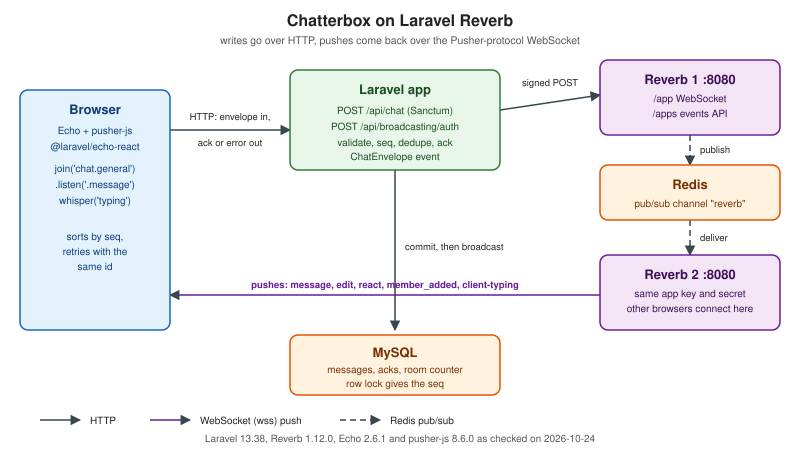

Laravel Reverb
|
This content was generated with the assistance of AI and should be verified against the official documentation before being relied on in production. |
This page is written against Laravel 13.38.0 on PHP 8.4.27, laravel/reverb 1.12.0, laravel-echo 2.6.1,
@laravel/echo-react 2.6.1, pusher-js 8.6.0, Redis 8.8.3 and MySQL 8.4, checked on 2026-10-24. Laravel Reverb is the
first-party WebSocket server of the Laravel ecosystem: a PHP process on a ReactPHP event loop that speaks the Pusher
protocol, so it works with Laravel’s broadcasting layer on the server and with Laravel Echo and pusher-js in the
browser. Broadcasting and Reverb already explains installation,
ShouldBroadcast events, channel authorization callbacks, Echo basics and the Pusher, Ably and Mercure alternatives for
a library application; this page does not repeat that. It answers a different question: what does it take to build the
Chatterbox chat application of this section, with its rooms, presence, typing indicators, acknowledgements, sequence
numbers and history, on Reverb, and where does the Pusher protocol force the design to differ from the Chatterbox
protocol of Message Design and Serialization?
Reverb is not a general WebSocket server
Reverb implements one protocol, version 7 of the Pusher Channels protocol. A browser connects to
ws://host:8080/app/{key}, receives pusher:connection_established with a socket_id, and then subscribes to named
channels. Every frame is a JSON object with an event name, usually a channel, and a data field that is itself a
JSON-encoded string. Laravel talks to the same server over HTTP: the reverb broadcast driver signs a request to
/apps/{app_id}/events (the Pusher HTTP API, through pusher/pusher-php-server 7.3.0) and Reverb forwards the event to
every subscriber of the channel. A Reverb installation therefore has two surfaces, the /app WebSocket endpoint and the
/apps events API, and a reverse proxy has to serve both.
Three consequences shape everything below.
-
Reverb has no hook for application frames. Clients cannot send arbitrary messages to Laravel over the socket. The only client-to-server frames it understands are the
pusher:control events and client events, which Reverb relays to the other members of a channel without ever calling Laravel. -
Writes therefore go over HTTP. A message that must be validated, numbered, stored and acknowledged is a normal Laravel request. The socket is a push channel.
-
Any Pusher client works.
pusher-js, the Pusher mobile SDKs and the Pusher server libraries can talk to Reverb, so a native Chatterbox client does not need Echo. The Pusher WebSocket protocol reference describes the frames that the run below prints.
Of the three scenarios, Chatterbox suits Reverb well: it is mostly server-to-browser fan-out with durable state in a database, which is what Laravel is good at. Pixel Arena does not fit, because it needs a 20 Hz authoritative tick loop and binary snapshots, and Reverb offers neither a game loop nor binary frames. Huddle only needs a signalling channel, and Reverb would work for that, but ICE candidates are client-to-client traffic that whispers (below) carry without validation, which is a thin base for a signalling server.
How Chatterbox maps onto the Pusher protocol
Reverb does not implement the Chatterbox wire protocol and cannot be made to. A chatterbox.v1 client that connects to
wss://chat.example.test/ws and sends a hello frame will not work against it. What this page builds is Chatterbox
semantics over the Pusher transport: the envelope (v, type, id, room, ts, payload) is kept as the body of
HTTP requests and responses and as the data of pushed events, and the rules (per-room seq, idempotent ids, the
acknowledgement and error codes, history paging) are enforced by Laravel. A browser client needs an adapter, the one in
the Echo section below, instead of the plain WebSocket client of the other server pages.

| Chatterbox | On Reverb and Laravel | Differs from the reference protocol |
|---|---|---|
Transport and subprotocol |
Pusher protocol 7 on |
Yes: a different wire protocol, the same envelope. |
|
|
No hello frame, no 5 s hello deadline, no |
|
Subscribing to |
Members carry |
|
|
Same envelope, same payloads, same |
|
The HTTP response: an |
Same codes. |
|
A whisper, the client event |
No validation, no ack, no persistence, and the frame carries no user id (see below). |
|
|
Same payload and paging. |
Idempotency |
The |
Same, but kept for ever instead of 24 h. |
Rate limits and sizes |
20 envelopes per second per user in Laravel, and Reverb’s |
Per user instead of per connection. An oversized frame closes the socket with 1009, not 4413. |
Heartbeat, close codes, resume |
|
The application close codes (4400 to 4503) do not exist; the Pusher codes 4000 to 4399 replace them. |
The adapter therefore has three jobs that the native clients of the other pages get from the protocol: send envelopes
with fetch, subscribe before it asks for history, and merge pushed and fetched envelopes by seq.
What the wire looks like
A Node script with the ws package (the client at the end of the page) connected to the Reverb of the Compose project
below as two users, asked Laravel to authorize the presence channel and printed the frames. Frame data fields are
shown decoded:
<- pusher:connection_established {"socket_id":"834043982.307151597","activity_timeout":30}
-> POST /api/broadcasting/auth {socket_id, channel_name: "presence-chat.general"} 200 {auth, channel_data}
-> pusher:subscribe {"channel":"presence-chat.general","auth":"<app key>:<hmac>","channel_data":"{\"user_id\":\"1\",...}"}
<- pusher_internal:subscription_succeeded presence-chat.general
{"presence":{"count":1,"ids":["1"],"hash":{"1":{"userId":"1","name":"Alice"}}}}
<- pusher_internal:member_added presence-chat.general {"user_id":"2","user_info":{"userId":"2","name":"Bob"}}
<- message presence-chat.general
{"v":1,"type":"message","id":"01JAB3W7Q8Z4N5R66FFL8X1000","room":"general","ts":1792871801210,
"payload":{"from":{"userId":"1","name":"Alice"},"text":"Hello, Chatterbox","replyTo":null,"attachments":[],"seq":1,"edited":false}}
<- client-typing presence-chat.general {"state":"start"}
<- pusher_internal:member_removed presence-chat.general {"user_id":"1"}Source: Laravel — Presence Channels
The presence hash is keyed by the user id, and user_info is whatever the channel callback returned: here the Chatterbox
member { userId, name }. The whole Chatterbox envelope is the event data. Two details differ from what the Chatterbox
reference server sends. The frame has no top-level room or type of its own, because the Pusher channel and event
carry that information and the envelope repeats it inside data. And the client-typing frame has no sender: the
Pusher reference says that presence client events carry a user_id, but the frame that Reverb 1.12.0 relayed contained
only the data the sender put in it.
Project setup
On a machine without PHP, a Dockerfile with PHP, the extensions Laravel needs and Composer is enough. The image tags were verified on Docker Hub on the check date:
FROM php:8.4-cli
RUN apt-get update && apt-get install -y --no-install-recommends git unzip libzip-dev && rm -rf /var/lib/apt/lists/* \
&& docker-php-ext-install pcntl zip pdo_mysql
COPY --from=composer:2.10.3 /usr/bin/composer /usr/local/bin/composer
WORKDIR /appSource: Docker Hub — php official image
The application was created and extended with these commands, run in a container of that image:
composer create-project laravel/laravel . --no-interaction
composer require laravel/reverb predis/predis -W # reverb 1.12.0, predis 3.7.0
php artisan install:api # Sanctum 4 and the personal_access_tokens table
php artisan install:broadcasting --reverb --without-node --no-interactionSource: Laravel — Reverb Installation
On this run, install:broadcasting published config/broadcasting.php and routes/channels.php and set
BROADCAST_CONNECTION=reverb, but wrote no REVERB_* variables. From then on every Artisan command, including
reverb:install, failed with Failed to create broadcaster for connection (the connection being reverb) and the cause Pusher\Pusher::__construct():
Argument #1 ($auth_key) must be of type string, null given, because loading routes/channels.php builds the broadcaster
and the broadcaster needs a key. Setting BROADCAST_CONNECTION=log for one
command and running php artisan reverb:install --no-interaction generated config/reverb.php and the application id,
key and secret, and reverb could be restored. The Broadcasting page describes a guzzlehttp/psr7 conflict on an
application locked to Guzzle 8. On this fresh project Guzzle resolved to 7.16.0 with guzzlehttp/psr7 2.13.2, so
-W was enough. predis avoids the ext-redis
extension; set REDIS_CLIENT=predis.
bootstrap/app.php moves the authorization endpoint under /api, so that the Sanctum bearer token authenticates it (the
channels: argument of withRouting() is removed):
->withBroadcasting(__DIR__.'/../routes/channels.php', ['prefix' => 'api', 'middleware' => ['api', 'auth:sanctum']])Source: Laravel — Authorizing Channels
Compose file with two Reverb servers
The Compose project runs MySQL, Redis, the Laravel application behind PHP’s built-in server and two Reverb servers that
share one application key and one Redis. Ports are chosen to avoid clashes: 8230 for Laravel, 8231 and 8232 for the two
Reverb servers and 6430 for Redis. The application sends events to reverb1 (REVERB_HOST); browsers may connect to
either server.
name: g3-laravel-reverb
x-laravel: &laravel
build: .
working_dir: /app
volumes: [".:/app"]
environment: &laravel-env
REDIS_HOST: redis
REDIS_CLIENT: predis
CACHE_STORE: redis
DB_CONNECTION: mysql
DB_HOST: db
DB_DATABASE: chatterbox
DB_USERNAME: chatterbox
DB_PASSWORD: change-me
REVERB_HOST: reverb1 # where Laravel POSTs events (server side)
REVERB_PORT: "8080"
REVERB_SCHEME: http
REVERB_SCALING_ENABLED: ${SCALING:-true}
REVERB_ALLOWED_ORIGINS: chat.example.test
PHP_CLI_SERVER_WORKERS: "4"
services:
db:
image: mysql:8.4
environment:
MYSQL_DATABASE: chatterbox
MYSQL_USER: chatterbox
MYSQL_PASSWORD: change-me
MYSQL_ROOT_PASSWORD: change-me-root
healthcheck:
test: ["CMD", "mysqladmin", "ping", "-h", "127.0.0.1", "-pchange-me-root"]
interval: 3s
retries: 30
redis:
image: redis:8.8.3-alpine
ports: ["6430:6379"]
app:
<<: *laravel
command: php -S 0.0.0.0:8000 -t public
ports: ["8230:8000"]
depends_on:
db: { condition: service_healthy }
reverb1: { condition: service_started }
reverb1:
<<: *laravel
command: php artisan reverb:start --host=0.0.0.0 --port=8080 --debug
ports: ["8231:8080"]
depends_on: [redis]
reverb2:
<<: *laravel
command: php artisan reverb:start --host=0.0.0.0 --port=8080
ports: ["8232:8080"]
depends_on: [redis]Source: Laravel — Reverb Scaling
Two points about the environment. Under php artisan serve the REVERB_HOST from Compose did not reach the application,
which sent its events to localhost:8080 from inside the container, and every dispatch failed with cURL error 7; the
application therefore runs under php -S directly, which passes the environment through. And REVERB_SERVER_HOST and REVERB_SERVER_PORT
(where Reverb listens) are different settings from REVERB_HOST and REVERB_PORT (where Laravel posts events and where
browsers connect), which the Laravel documentation stresses and which matters as soon as a proxy sits in between.
Per-application settings
config/reverb.php has one entry per Reverb application. The generated defaults were kept except for two environment
variables: the allow-list reads REVERB_ALLOWED_ORIGINS as a comma-separated list, and REVERB_APP_MAX_MESSAGE_SIZE is
16384 to match the Chatterbox frame limit. Each setting below was exercised against the running servers.
| Setting | Default | Observed behaviour |
|---|---|---|
|
|
With |
|
|
A whisper from a connection that had not joined the channel got |
|
10000 bytes |
With 16384, a 17000-byte whisper closed the socket with code 1009 and the reason |
|
disabled; 60 attempts per 60 s when enabled |
Enabled with 5 attempts, a client’s subscribe plus four whispers passed and the next four got |
|
60 s and 30 s |
|
|
unlimited |
A per-application cap, useful when one Reverb serves several applications. |
Source: Laravel — Reverb Allowed Origins
A missing Origin is refused as well as a wrong one, which matters for tests: pusher-js in Node and the WebSocket
client of Node 24 send no Origin, so a script has to set one (the ws package accepts an origin option) or run
against an instance with the wildcard. The * default lets any website open a socket with the public key, so list the
real origin in production.
The Laravel side
Everything the Chatterbox protocol requires of a server lives in a few small classes. The migration creates a room
counter, the messages, the reactions and the acknowledgements. The ack is stored as text, not as a json column,
because MySQL reorders the keys of a json column and the replayed ack would then differ from the first.
<?php
use Illuminate\Database\Migrations\Migration;
use Illuminate\Database\Schema\Blueprint;
use Illuminate\Support\Facades\Schema;
return new class extends Migration
{
public function up(): void
{
Schema::create('chat_rooms', function (Blueprint $t) {
$t->string('name', 64)->primary();
$t->unsignedBigInteger('last_seq')->default(0); // one counter per room
});
Schema::create('chat_messages', function (Blueprint $t) {
$t->string('id', 36)->primary(); // the client id is the message id forever
$t->string('room', 64);
$t->foreignId('user_id');
$t->unsignedBigInteger('seq');
$t->text('text');
$t->string('reply_to', 36)->nullable();
$t->json('attachments');
$t->unsignedBigInteger('created_ms');
$t->unsignedBigInteger('edited_ms')->nullable();
$t->unique(['room', 'seq']);
});
Schema::create('chat_reactions', function (Blueprint $t) {
$t->string('target', 36);
$t->foreignId('user_id');
$t->string('emoji', 32);
$t->primary(['target', 'user_id', 'emoji']);
});
Schema::create('chat_acks', function (Blueprint $t) { // idempotency: (user, id) -> original ack
$t->foreignId('user_id');
$t->string('id', 36);
$t->text('ack');
$t->unsignedBigInteger('created_ms');
$t->primary(['user_id', 'id']);
});
}
public function down(): void
{
foreach (['chat_acks', 'chat_reactions', 'chat_messages', 'chat_rooms'] as $table) {
Schema::dropIfExists($table);
}
}
};The envelope helpers and the error type keep the controller short. The error table is the Chatterbox one, with its HTTP
status and the retryable flag:
<?php
namespace App\Chat;
use Illuminate\Support\Str;
final class Envelope
{
public static function nowMs(): int
{
return (int) floor(microtime(true) * 1000);
}
public static function make(string $type, ?string $id, ?string $room, array $payload, ?int $ts = null): array
{
return [
'v' => 1, 'type' => $type, 'id' => $id ?? 's_'.Str::upper((string) Str::ulid()),
'room' => $room, 'ts' => $ts ?? self::nowMs(), 'payload' => (object) $payload,
];
}
public static function ack(string $ref, ?string $room, ?int $seq, array $result = [], bool $dup = false): array
{
return self::make('ack', null, $room, ['ref' => $ref, 'ok' => true, 'seq' => $seq, 'dup' => $dup, 'result' => (object) $result]);
}
}<?php
namespace App\Chat;
use RuntimeException;
final class ChatError extends RuntimeException
{
private const TABLE = [
'bad_request' => [400, false], 'unauthorized' => [401, false], 'forbidden' => [403, false],
'not_found' => [404, false], 'conflict' => [409, false], 'too_large' => [413, false],
'unsupported_version' => [426, false], 'rate_limited' => [429, true], 'internal' => [500, true],
'unavailable' => [503, true],
];
public function __construct(public readonly string $codeName, string $message)
{
parent::__construct($message);
}
public function status(): int { return self::TABLE[$this->codeName][0]; }
public function retryable(): bool { return self::TABLE[$this->codeName][1]; }
}<?php
namespace App\Chat;
use App\Models\User;
use Illuminate\Support\Str;
final class Rooms
{
public static function valid(string $room): bool
{
return preg_match('/^[a-z0-9-]{1,64}$/', $room) === 1;
}
/** Public rooms are open to every signed-in user; dm-<a>-<b> only to the two users it names. */
public static function canAccess(User $user, string $room): bool
{
if (! self::valid($room)) {
return false;
}
if (str_starts_with($room, 'dm-')) {
$ids = explode('-', Str::after($room, 'dm-'));
return count($ids) === 2 && in_array((string) $user->id, $ids, true);
}
return true;
}
}Source: Laravel — Helpers: Str::after
Pushing is one broadcast event that carries a whole envelope. ShouldBroadcastNow sends it during the request, which
keeps sequence order equal to send order: with a queued ShouldBroadcast event, several workers could deliver seq 8
before 7. PresenceChannel makes the wire channel presence-chat.{room}, broadcastAs makes the event name the
envelope type, and broadcastWith replaces the default public-property payload:
<?php
namespace App\Events;
use Illuminate\Broadcasting\PresenceChannel;
use Illuminate\Contracts\Broadcasting\ShouldBroadcastNow;
use Illuminate\Foundation\Events\Dispatchable;
/** One Chatterbox envelope (message, edit or react) pushed to every member of a room. */
class ChatEnvelope implements ShouldBroadcastNow // sent during the request: seq order is send order
{
use Dispatchable;
public function __construct(public string $room, public array $envelope) {}
public function broadcastOn(): PresenceChannel
{
return new PresenceChannel('chat.'.$this->room);
}
public function broadcastAs(): string
{
return $this->envelope['type']; // Echo listens for ".message", ".edit", ".react"
}
public function broadcastWith(): array
{
return $this->envelope; // the whole envelope is the event data
}
}<?php
use App\Chat\Rooms;
use App\Models\User;
use Illuminate\Support\Facades\Broadcast;
// presence-chat.{room}: the member list is the Chatterbox member list
Broadcast::channel('chat.{room}', function (User $user, string $room) {
return Rooms::canAccess($user, $room)
? ['userId' => (string) $user->id, 'name' => $user->name]
: false;
});The channel callback is the membership rule and also the member record: returning the array makes Laravel sign the
channel_data that every other member then receives as user_info, and returning false is the 403 that user 3 got for
dm-1-2. The controller reuses Rooms::canAccess, so the HTTP endpoint and the socket cannot disagree about who may use
a room. The route is one line, Route::post('/chat', ChatController::class)->middleware('auth:sanctum') in
routes/api.php.
<?php
namespace App\Http\Controllers;
use App\Chat\ChatError;
use App\Chat\Envelope;
use App\Chat\Rooms;
use App\Events\ChatEnvelope;
use App\Models\User;
use Illuminate\Database\UniqueConstraintViolationException;
use Illuminate\Http\JsonResponse;
use Illuminate\Http\Request;
use Illuminate\Support\Facades\DB;
use Illuminate\Support\Facades\RateLimiter;
class ChatController extends Controller
{
public function __invoke(Request $request): JsonResponse
{
$env = $request->json()->all();
try {
return response()->json($this->handle($request->user(), $env));
} catch (ChatError $e) {
$error = Envelope::make('error', null, $env['room'] ?? null, [
'ref' => is_string($env['id'] ?? null) ? $env['id'] : null,
'code' => $e->codeName, 'message' => $e->getMessage(), 'retryable' => $e->retryable(),
]);
return response()->json($error, $e->status());
}
}
private function handle(User $user, array $env): array
{
// rate limit first: 20 envelopes per second per user, checked before deduplication
if (! RateLimiter::attempt('chat:'.$user->id, 20, fn () => true, 1)) {
throw new ChatError('rate_limited', 'Slow down.');
}
if (($env['v'] ?? null) !== 1) {
throw new ChatError('unsupported_version', 'Only protocol version 1 is supported.');
}
$type = $env['type'] ?? null;
$id = $env['id'] ?? null;
$room = $env['room'] ?? null;
$payload = $env['payload'] ?? null;
if (! in_array($type, ['message', 'edit', 'react', 'history'], true)) {
throw new ChatError('bad_request', 'This endpoint carries message, edit, react and history.');
}
if (! is_string($id) || ! preg_match('/^[0-9A-Za-z-]{26,36}$/', $id)) {
throw new ChatError('bad_request', 'id must be 26 to 36 characters.');
}
if (! is_string($room) || ! Rooms::valid($room) || ! is_array($payload)) {
throw new ChatError('bad_request', 'room or payload is invalid.');
}
if (! Rooms::canAccess($user, $room)) {
throw new ChatError('forbidden', 'You cannot use this room.');
}
if ($type === 'history') {
return $this->history($id, $room, $payload);
}
if ($stored = DB::table('chat_acks')->where(['user_id' => $user->id, 'id' => $id])->value('ack')) {
$ack = json_decode($stored); // the original ack, flagged as a duplicate
$ack->payload->dup = true;
return (array) $ack;
}
DB::table('chat_rooms')->insertOrIgnore(['name' => $room, 'last_seq' => 0]); // outside the transaction: no gap locks
$broadcast = null;
try {
$ack = DB::transaction(function () use ($user, $type, $id, $room, $payload, &$broadcast) {
$seq = $this->nextSeq($room);
$broadcast = match ($type) {
'message' => $this->message($user, $id, $room, $payload, $seq),
'edit' => $this->edit($user, $room, $payload, $seq),
'react' => $this->react($user, $room, $payload, $seq),
};
$ack = Envelope::ack($id, $room, $seq);
DB::table('chat_acks')->insert([
'user_id' => $user->id, 'id' => $id, 'ack' => json_encode($ack), 'created_ms' => Envelope::nowMs(),
]);
return $ack;
}, attempts: 3);
} catch (UniqueConstraintViolationException) {
throw new ChatError('conflict', 'That id or reaction already exists.');
}
ChatEnvelope::dispatch($room, $broadcast); // after the commit, so nobody sees a rolled-back seq
return $ack;
}
private function nextSeq(string $room): int
{
// the row exists (see handle()); lockForUpdate serialises senders in a room until their commit
$seq = (int) DB::table('chat_rooms')->where('name', $room)->lockForUpdate()->value('last_seq') + 1;
DB::table('chat_rooms')->where('name', $room)->update(['last_seq' => $seq]);
return $seq;
}
private function message(User $user, string $id, string $room, array $p, int $seq): array
{
$text = $p['text'] ?? null;
$reply = $p['replyTo'] ?? null;
$attachments = $p['attachments'] ?? [];
if (! is_string($text) || ($len = strlen(mb_convert_encoding($text, 'UTF-16LE', 'UTF-8')) / 2) < 1 || $len > 4000) {
throw new ChatError('bad_request', 'text must be 1 to 4000 UTF-16 code units.');
}
if (! is_array($attachments) || count($attachments) > 5) {
throw new ChatError('bad_request', 'At most 5 attachments.');
}
if ($reply !== null && ! DB::table('chat_messages')->where(['id' => $reply, 'room' => $room])->exists()) {
throw new ChatError('not_found', 'replyTo is not a message of this room.');
}
$now = Envelope::nowMs();
DB::table('chat_messages')->insert([
'id' => $id, 'room' => $room, 'user_id' => $user->id, 'seq' => $seq, 'text' => $text,
'reply_to' => $reply, 'attachments' => json_encode($attachments), 'created_ms' => $now,
]);
return Envelope::make('message', $id, $room, [
'from' => ['userId' => (string) $user->id, 'name' => $user->name], 'text' => $text,
'replyTo' => $reply, 'attachments' => $attachments, 'seq' => $seq, 'edited' => false,
], $now);
}
private function edit(User $user, string $room, array $p, int $seq): array
{
$row = DB::table('chat_messages')->where(['id' => $p['target'] ?? '', 'room' => $room])->first();
if (! $row) {
throw new ChatError('not_found', 'Unknown target.');
}
if ($row->user_id !== $user->id) {
throw new ChatError('forbidden', 'Only the author can edit.');
}
if (! is_string($p['text'] ?? null) || $p['text'] === '') {
throw new ChatError('bad_request', 'text is required.');
}
$now = Envelope::nowMs();
DB::table('chat_messages')->where('id', $row->id)->update(['text' => $p['text'], 'edited_ms' => $now]);
return Envelope::make('edit', null, $room, ['target' => $row->id, 'text' => $p['text'], 'seq' => $seq, 'editedAt' => $now], $now);
}
private function react(User $user, string $room, array $p, int $seq): array
{
$emoji = $p['emoji'] ?? '';
$op = $p['op'] ?? '';
if (! DB::table('chat_messages')->where(['id' => $p['target'] ?? '', 'room' => $room])->exists()) {
throw new ChatError('not_found', 'Unknown target.');
}
if (! is_string($emoji) || preg_match_all('/\X/u', $emoji) !== 1 || ! in_array($op, ['add', 'remove'], true)) {
throw new ChatError('bad_request', 'One emoji and op add or remove.');
}
$key = ['target' => $p['target'], 'user_id' => $user->id, 'emoji' => $emoji];
if ($op === 'add') {
DB::table('chat_reactions')->insert($key); // a second add violates the primary key: conflict
} elseif (DB::table('chat_reactions')->where($key)->delete() === 0) {
throw new ChatError('not_found', 'You have not added that emoji.');
}
return Envelope::make('react', null, $room, [
'target' => $p['target'], 'emoji' => $emoji, 'op' => $op, 'from' => ['userId' => (string) $user->id], 'seq' => $seq,
]);
}
private function history(string $id, string $room, array $p): array
{
$before = $p['before'] ?? null;
$limit = $p['limit'] ?? 50;
if (($before !== null && ! is_int($before)) || ! is_int($limit) || $limit < 1 || $limit > 100) {
throw new ChatError('bad_request', 'before is a seq or null, limit is 1 to 100.');
}
$rows = DB::table('chat_messages')->join('users', 'users.id', '=', 'chat_messages.user_id')
->where('room', $room)->when($before !== null, fn ($q) => $q->where('seq', '<', $before))
->orderByDesc('seq')->limit($limit + 1)
->get(['chat_messages.*', 'users.name'])->all();
$hasMore = count($rows) > $limit;
$rows = array_reverse(array_slice($rows, 0, $limit)); // ascending seq
$messages = array_map(fn ($r) => Envelope::make('message', $r->id, $room, [
'from' => ['userId' => (string) $r->user_id, 'name' => $r->name], 'text' => $r->text,
'replyTo' => $r->reply_to, 'attachments' => json_decode($r->attachments, true),
'seq' => $r->seq, 'edited' => $r->edited_ms !== null,
], $r->created_ms), $rows);
return Envelope::ack($id, $room, null, [
'messages' => $messages, 'hasMore' => $hasMore, 'next' => $hasMore ? $rows[0]->seq : null,
]);
}
}Four design points are worth stating, because each one was found by running the code:
-
The sequence number needs a row lock, taken first. The first version inserted the counter row inside the transaction and then incremented it. Ten parallel posts to one room on MySQL 8.4 produced
Deadlock found when trying to get lockfor six of them. On SQLite the same test failed withdatabase is locked. Creating the row before the transaction and starting the transaction withlockForUpdate()made ten parallel posts return the contiguousseqvalues 10 to 19. Theattempts: 3argument retries a transaction that still loses a deadlock. -
The event is dispatched after the commit. Nobody sees a
seqthat was rolled back. -
A broadcast that fails after the commit is not retried. The first run of the scenario hit a Reverb that was unreachable: the request answered 500 after the transaction had committed and the ack was stored. The client’s retry with the same id returned
dup: trueand Laravel did not broadcast again, so the other members never saw the message until they fetched history. Treat the history endpoint as the recovery path, or write an outbox row in the transaction and publish it from a worker. -
The rate limit runs before deduplication, as the protocol says. A flood of 30 posts in one second got 10
rate_limitederrors withretryable: true, and a limited retry can still be a duplicate afterwards.
Echo and the hooks in the browser
Echo owns the socket: it connects, authorizes each channel through /api/broadcasting/auth, answers pings and
reconnects with back-off. The configuration uses the reverb broadcaster, which needs laravel-echo 1.16 or later; the
installed version is 2.6.1. @laravel/echo-react 2.6.1 exports configureEcho, useEcho, useEchoPublic,
useEchoPresence, useEchoModel, useEchoNotification, useChannel, usePresenceChannel, usePublicChannel,
useSocketId and useConnectionStatus. A Chatterbox room in React subscribes to the presence channel, merges pushes by
seq, loads history after the subscription is live and shows the connection state:
// resources/js/chatterbox/Room.tsx
import { configureEcho, useConnectionStatus, useEchoPresence } from '@laravel/echo-react';
import { useCallback, useEffect, useRef, useState } from 'react';
configureEcho({
broadcaster: 'reverb',
key: import.meta.env.VITE_REVERB_APP_KEY,
wsHost: import.meta.env.VITE_REVERB_HOST,
wsPort: Number(import.meta.env.VITE_REVERB_PORT ?? 80),
wssPort: Number(import.meta.env.VITE_REVERB_PORT ?? 443),
forceTLS: (import.meta.env.VITE_REVERB_SCHEME ?? 'https') === 'https',
enabledTransports: ['ws', 'wss'],
authEndpoint: '/api/broadcasting/auth',
auth: { headers: { Authorization: `Bearer ${localStorage.getItem('chatterbox.token')}`, Accept: 'application/json' } },
});
type Message = { id: string; payload: { seq: number; text: string; edited: boolean; from: { userId: string; name: string } } };
async function call(type: string, room: string, payload: object, id = crypto.randomUUID()) {
const response = await fetch('/api/chat', {
method: 'POST',
headers: { 'Content-Type': 'application/json', Accept: 'application/json', Authorization: `Bearer ${localStorage.getItem('chatterbox.token')}` },
body: JSON.stringify({ v: 1, type, id, room, ts: 0, payload }),
});
return { ok: response.ok, ...(await response.json()) }; // an ack or error envelope either way
}
export function Room({ room }: { room: string }) {
const [messages, setMessages] = useState<Message[]>([]);
const [typing, setTyping] = useState<string[]>([]);
const seen = useRef(new Set<number>());
const status = useConnectionStatus(); // connected, connecting, reconnecting, disconnected, failed
const merge = useCallback((incoming: Message[]) => setMessages((all) => {
const fresh = incoming.filter((m) => !seen.current.has(m.payload.seq) && seen.current.add(m.payload.seq));
return [...all, ...fresh].sort((a, b) => a.payload.seq - b.payload.seq); // seq is the ordering key
}), []);
const { channel } = useEchoPresence<Message>(`chat.${room}`, '.message', (m) => merge([m])); // leading dot: no namespace
useEffect(() => {
if (status !== 'connected') return;
// subscribe first, then fetch, so nothing falls into the gap; duplicates are dropped by seq
call('history', room, { before: null, limit: 50 }).then((ack) => merge(ack.payload.result.messages));
const presence = channel();
presence?.listenForWhisper('typing', (e: { userId: string; state: string }) =>
setTyping((names) => (e.state === 'start' ? [...new Set([...names, e.userId])] : names.filter((n) => n !== e.userId))));
}, [status, room]);
const send = (text: string) => call('message', room, { text, replyTo: null, attachments: [] });
return <p>{status}: {messages.length} messages, typing: {typing.join(', ')} <button onClick={() => send('Hello, Chatterbox')}>Send</button></p>;
}The component type-checks against the hook signatures that the installed package ships, which is the reason for the
channel() call: useEchoPresence returns channel, leave, leaveChannel, listen and stopListening, and
channel() is the underlying Echo presence channel with here, joining, leaving and whisper. The Vue and Svelte
packages have the same hooks. When a hook is not an option, the vanilla API does the same:
Echo.join('chat.general').here(...).joining(...).leaving(...).listen('.message', ...).
The vanilla API was run for real. A Node script created two Echo instances with pusher-js 8.6.0 against a Reverb that
accepts any origin (pusher-js in Node sends none) and printed:
// Real laravel-echo 2.6.1 + pusher-js 8.6.0 in Node. pusher-js sends no Origin header here, so the
// Reverb on port 8233 runs with REVERB_ALLOWED_ORIGINS='*' (a browser always sends its Origin).
import Echo from 'laravel-echo';
import Pusher from 'pusher-js';
import { readFileSync } from 'node:fs';
import { envelope, send } from './chatterbox-client.mjs';
const tokens = Object.fromEntries(readFileSync('tokens.txt', 'utf8').trim().split('\n').map((l) => l.split(' ').slice(1)));
const connect = (user) => new Echo({
broadcaster: 'reverb', Pusher, key: process.env.REVERB_APP_KEY,
wsHost: 'localhost', wsPort: 8233, forceTLS: false, enabledTransports: ['ws'],
authEndpoint: 'http://localhost:8230/api/broadcasting/auth',
auth: { headers: { Authorization: `Bearer ${tokens[user]}`, Accept: 'application/json' } },
});
const pause = (ms) => new Promise((r) => setTimeout(r, ms));
const bob = connect('bob');
bob.join('chat.general')
.here((members) => console.log('here ', JSON.stringify(members)))
.joining((m) => console.log('joining ', JSON.stringify(m)))
.leaving((m) => console.log('leaving ', JSON.stringify(m)))
.listen('.message', (e) => console.log('message ', e.payload.seq, e.payload.text))
.listenForWhisper('typing', (e) => console.log('typing ', JSON.stringify(e)));
await pause(1500);
const alice = connect('alice');
const room = alice.join('chat.general');
await pause(1500);
room.whisper('typing', { state: 'start' });
console.log('ack ', (await send('alice', envelope('message', 'general', { text: 'sent through Echo' }))).seq);
await pause(1000);
console.log('state ', alice.connector.pusher.connection.state, typeof alice.socketId());
alice.leave('chat.general');
await pause(1000);
alice.disconnect(); bob.disconnect();
process.exit(0);here [{"userId":"2","name":"Bob"}]
joining {"userId":"1","name":"Alice"}
typing {"state":"start"}
message 1 sent through Echo
ack 1
state connected string
leaving {"userId":"1","name":"Alice"}Whispers: typing and receipts
A client event is a frame whose name starts with client-. Reverb relays it to the other members of the channel
without calling Laravel, and only private and presence channels accept it. That makes it the right carrier for the two
fire-and-forget Chatterbox types, typing and receipt: no database write, no ack, no seq. The run showed the
properties that matter. The sender did not receive its own whisper. A connection that had not joined the channel got
4009 and the whisper was not relayed. And the relayed frame was {"state":"start"} and nothing else.
The last point is a security limit. Any member can put any userId into the data, so a receiver cannot trust it. Treat
typing indicators as hints, never as authorship, and if a receipt must be authoritative (for example for read markers
that are shown to others as facts), send it with POST /api/chat and let Laravel stamp from from the token. Client
side, throttle typing to one frame every 3 s as the protocol says and expire start after 5 s; Reverb will not do it
for you, though rate_limiting bounds the damage.
toOthers and X-Socket-ID
The Chatterbox protocol sends message, edit and react to every member including the sender, so the sender’s copy
is how it learns the seq. A client that renders optimistically does not need its own copy. broadcast(new
ChatEnvelope(…))→toOthers() omits the connection whose socket_id arrives in the X-Socket-ID header, and the event
must use the InteractsWithSockets trait. Echo adds the header automatically to requests made with a global Axios
instance. A client that uses fetch, like the one above, has to send X-Socket-ID itself, with the value of
Echo.socketId() (useSocketId() in the hooks). A test with the header set to Alice’s socket_id confirmed that Alice
received nothing and Bob received the message. Without the header, toOthers() has nothing to exclude and sends to
everyone, which fails open and is easy to miss.
Model broadcasting is the other shortcut: a model with the BroadcastsEvents trait broadcasts created, updated and
deleted events on a private channel named after the model, with the payload under model, without an event class. It
suits a read-only mirror, such as a table of read receipts that a moderator panel watches. It does not fit the message
flow here, because the envelope, the sequence number and the acknowledgement are produced by the request, not by the
model event.
Scaling with Redis
One Reverb process keeps every connection and every channel’s member list in its own memory. Two processes behind a load
balancer are two separate worlds, unless they share events. REVERB_SCALING_ENABLED=true makes each instance publish the
events it receives to a Redis pub/sub channel (reverb by default) and subscribe to the same channel. The experiment was
run on the Compose project above: three sockets, one on Reverb 1 and two on Reverb 2 or 1, joined chat.general, and
Laravel posted a message each round, always to reverb1.
| Run | Sockets that received the message (instance 1, 2, 1) | Presence across instances |
|---|---|---|
|
yes, no, yes |
Bob, on instance 2, saw a member list with only himself, and Alice received no |
|
yes, yes, yes |
Bob’s list had both users and Alice received |
Source: Laravel — Reverb Scaling
The first row is the failure mode to remember: without the backplane, nothing errors. Messages simply reach only the
users who happened to land on the instance that Laravel posted to. The Redis channel is plain pub/sub, which is
at-most-once: an instance that is restarting misses the events published meanwhile, and that is another reason for the
history endpoint and the seq gap check. Scaling WebSockets compares
this backplane with the ones of the other stacks.
Putting nginx in front gives one public hostname. Reverb serves /app for WebSockets and /apps for the events API, so
the proxy forwards both, with the Upgrade headers on the first. This configuration was run in front of the two Reverb
servers; a socket through it joined the presence channel, and an unsigned post to /apps came back 401 from Reverb:
upstream reverb { server reverb1:8080; server reverb2:8080; } # round robin; the Redis backplane makes any instance fine
map $http_upgrade $connection_upgrade { default upgrade; '' close; }
server {
listen 80;
server_name chat.example.test;
location /app { # WebSocket (Pusher protocol)
proxy_pass http://reverb;
proxy_http_version 1.1;
proxy_set_header Upgrade $http_upgrade;
proxy_set_header Connection $connection_upgrade;
proxy_set_header Host $http_host;
proxy_set_header X-Forwarded-For $proxy_add_x_forwarded_for;
proxy_read_timeout 120s; # longer than the 60 s ping interval
}
location /apps { proxy_pass http://reverb; proxy_set_header Host $http_host; } # HTTP events API
}Source: Laravel — Reverb Web Server
The remaining production items come from the Reverb documentation and were not load-tested here.
-
Open files. Every connection is a file descriptor, so
ulimit -n(orLimitNOFILEin systemd) and nginx’sworker_rlimit_nofileandworker_connectionsmust exceed the connection count, and a Supervisor-managed Reverb needsminfdsinsupervisord.conf. -
Event loop. The default
stream_selectloop is limited to 1024 descriptors. Installingext-uvwithpecl install uvmakes Reverb switch to a libuv loop automatically, which is required beyond about 1000 concurrent connections. -
Ports. Each client connection uses an ephemeral port on a proxy, about 28000 with the default range, so scale out before you tune the range.
-
Process management. Supervisor or systemd restart
php artisan reverb:start.php artisan reverb:restartcloses connections gracefully so the supervisor starts the new code, and clients reconnect, which is the reconnection storm that Connection Lifecycle, Heartbeats and Reconnection describes. -
Monitoring. The Pulse recorders
ReverbConnectionsandReverbMessagesand the cards<livewire:reverb.connections />and<livewire:reverb.messages />chart connections and messages, andpulse:checkmust run on one Reverb server only. Reverb also dispatchesChannelCreated,ChannelRemoved,ConnectionPruned,MessageReceivedandMessageSentevents that a listener can count. -
Managed option. Laravel Cloud offers managed Reverb clusters, which removes the process, proxy and Redis items above.
Testing
Three layers cover the application. The first two are PHPUnit feature tests that need no WebSocket: they fake the event and call the authorization endpoint. The third is the script that talks to the real servers.
<?php
namespace Tests\Feature;
use App\Events\ChatEnvelope;
use App\Models\User;
use Illuminate\Foundation\Testing\RefreshDatabase;
use Illuminate\Support\Facades\Event;
use Tests\TestCase;
class ChatterboxTest extends TestCase
{
use RefreshDatabase;
private function envelope(string $type, string $room, array $payload, string $id = '01JAB3W7Q8Z4N5R6T7V8X9Y0ZA'): array
{
return ['v' => 1, 'type' => $type, 'id' => $id, 'room' => $room, 'ts' => 0, 'payload' => $payload];
}
public function test_only_the_two_users_of_a_dm_can_authorize_its_presence_channel(): void
{
[$a, $b, $c] = User::factory()->count(3)->create();
$channel = "presence-chat.dm-{$a->id}-{$b->id}";
foreach ([$a, $b] as $member) {
$this->actingAs($member, 'sanctum')
->postJson('/api/broadcasting/auth', ['socket_id' => '1234.5678', 'channel_name' => $channel])
->assertOk()->assertJsonStructure(['auth', 'channel_data']);
}
$this->actingAs($c, 'sanctum')
->postJson('/api/broadcasting/auth', ['socket_id' => '1234.5678', 'channel_name' => $channel])
->assertForbidden();
}
public function test_a_message_gets_a_seq_is_broadcast_once_and_a_retry_is_a_duplicate(): void
{
Event::fake([ChatEnvelope::class]);
$this->actingAs(User::factory()->create(), 'sanctum');
$message = $this->envelope('message', 'general', ['text' => 'Hello, Chatterbox', 'replyTo' => null, 'attachments' => []]);
$first = $this->postJson('/api/chat', $message)->assertOk();
$retry = $this->postJson('/api/chat', $message)->assertOk();
$this->assertSame(1, $first->json('payload.seq'));
$this->assertFalse($first->json('payload.dup'));
$this->assertTrue($retry->json('payload.dup'));
$this->assertSame(1, $retry->json('payload.seq'));
Event::assertDispatchedTimes(ChatEnvelope::class, 1);
Event::assertDispatched(ChatEnvelope::class, fn ($e) => $e->room === 'general' && $e->envelope['payload']->seq === 1);
}
public function test_errors_are_envelopes_with_the_chatterbox_codes(): void
{
$this->actingAs(User::factory()->create(), 'sanctum');
$this->postJson('/api/chat', $this->envelope('message', 'dm-998-999', ['text' => 'hi']))
->assertForbidden()->assertJsonPath('type', 'error')->assertJsonPath('payload.code', 'forbidden');
$this->postJson('/api/chat', ['v' => 2] + $this->envelope('message', 'general', ['text' => 'hi']))
->assertStatus(426)->assertJsonPath('payload.code', 'unsupported_version');
$this->postJson('/api/chat', $this->envelope('message', 'general', ['text' => 'hi', 'replyTo' => 'missing']))
->assertNotFound()->assertJsonPath('payload.retryable', false);
}
}Source: Laravel — Mocking: Event fake
The tests need one change to phpunit.xml. The generated file sets BROADCAST_CONNECTION to null. Channel callbacks
are registered when routes/channels.php loads, on the broadcaster that is the default at that moment. A test that
switched the default to reverb afterwards found the callbacks missing and got a 403 for a legitimate member. Set the test environment to the real driver with throw-away
credentials instead:
<env name="BROADCAST_CONNECTION" value="reverb"/>
<env name="REVERB_APP_ID" value="test-app"/>
<env name="REVERB_APP_KEY" value="test-key"/>
<env name="REVERB_APP_SECRET" value="test-secret"/>The project’s five tests pass (OK (5 tests, 24 assertions): these three and the framework’s two examples). The
integration script needs the Compose project and tests the contract end to end, across both Reverb servers. The helper
below is a complete Pusher-protocol client of 45 lines, and the script after it asserts join, broadcast across
instances, ack, duplicate, the error codes, a whisper and history:
// Minimal Pusher-protocol client for tests: Node 24 + ws 8.22.0, no Echo.
import WebSocket from 'ws';
import { readFileSync } from 'node:fs';
export const KEY = process.env.REVERB_APP_KEY;
export const API = 'http://localhost:8230/api';
const tokens = Object.fromEntries(readFileSync('tokens.txt', 'utf8').trim().split('\n').map((l) => l.split(' ').slice(1)));
const headers = (user) => ({ Authorization: `Bearer ${tokens[user]}`, 'Content-Type': 'application/json', Accept: 'application/json' });
let counter = 0;
const run = Math.random().toString(36).slice(2, 8).toUpperCase();
export const newId = () => `01JAB3W7Q8Z4N5R6${run}${1000 + counter++}`; // 26 characters
export const envelope = (type, room, payload, id = newId()) => ({ v: 1, type, id, room, ts: 0, payload });
export async function send(user, env) { // writes go over HTTP
const res = await fetch(`${API}/chat`, { method: 'POST', headers: headers(user), body: JSON.stringify(env) });
const body = await res.json();
return { status: res.status, ...body.payload, type: body.type };
}
export class Socket {
frames = [];
constructor(user, port) {
this.user = user;
this.ws = new WebSocket(`ws://localhost:${port}/app/${KEY}?protocol=7&client=test&version=1`, { origin: 'https://chat.example.test' });
this.ws.on('message', (raw) => {
const frame = JSON.parse(raw);
if (typeof frame.data === 'string') frame.data = JSON.parse(frame.data); // data is double-encoded
if (frame.event === 'pusher:connection_established') this.socketId = frame.data.socket_id;
this.frames.push(frame);
});
}
async until(test, ms = 3000) {
for (const end = Date.now() + ms; Date.now() < end; await new Promise((r) => setTimeout(r, 20))) {
const hit = this.frames.find(test);
if (hit) return hit;
}
throw new Error('timeout');
}
async join(channel) { // authorize over HTTP, then subscribe
await this.until((f) => f.event === 'pusher:connection_established');
const res = await fetch(`${API}/broadcasting/auth`, { method: 'POST', headers: headers(this.user), body: JSON.stringify({ socket_id: this.socketId, channel_name: channel }) });
if (!res.ok) return { denied: res.status };
this.ws.send(JSON.stringify({ event: 'pusher:subscribe', data: { channel, ...(await res.json()) } }));
return this.until((f) => f.event === 'pusher_internal:subscription_succeeded' && f.channel === channel);
}
whisper(channel, event, data) { this.ws.send(JSON.stringify({ event: `client-${event}`, channel, data })); }
count(event) { return this.frames.filter((f) => f.event === event).length; }
}import assert from 'node:assert/strict';
import { Socket, envelope, send } from './chatterbox-client.mjs';
const room = 'presence-chat.general';
const alice = new Socket('alice', 8231); // Reverb instance 1
const bob = new Socket('bob', 8232); // Reverb instance 2
const mallory = new Socket('mallory', 8231);
const joined = await alice.join(room);
assert.deepEqual(Object.keys(joined.data.presence.hash), ['1']);
await bob.join(room);
await alice.until((f) => f.event === 'pusher_internal:member_added'); // crossed instances, via Redis
assert.deepEqual(await mallory.join('presence-chat.dm-1-2'), { denied: 403 }); // not a member of the DM
const hello = envelope('message', 'general', { text: 'Hello, Chatterbox', replyTo: null, attachments: [] });
const ack = await send('alice', hello);
assert.deepEqual([ack.type, ack.ok, ack.dup, typeof ack.seq], ['ack', true, false, 'number']);
const pushed = await bob.until((f) => f.event === 'message'); // bob is on the other instance
assert.equal(pushed.data.id, hello.id);
assert.equal(pushed.data.payload.seq, ack.seq);
await alice.until((f) => f.event === 'message'); // the sender gets its copy too
const retry = await send('alice', hello); // same id again
assert.deepEqual([retry.dup, retry.seq], [true, ack.seq]);
await new Promise((r) => setTimeout(r, 300));
assert.equal(bob.count('message'), 1); // no second broadcast
const code = async (user, env) => (await send(user, env)).code;
assert.equal(await code('bob', envelope('edit', 'general', { target: hello.id, text: 'x' })), 'forbidden');
assert.equal(await code('alice', envelope('message', 'general', { text: 'hi', replyTo: 'missing' })), 'not_found');
assert.equal(await code('alice', { ...envelope('message', 'general', { text: 'hi' }), v: 2 }), 'unsupported_version');
assert.equal(await code('alice', envelope('message', 'general', { text: '' })), 'bad_request');
assert.equal(await code('mallory', envelope('message', 'dm-1-2', { text: 'hi' })), 'forbidden');
const like = (op) => envelope('react', 'general', { target: hello.id, emoji: '👍', op });
assert.equal((await send('bob', like('add'))).ok, true);
assert.equal(await code('bob', like('add')), 'conflict');
alice.whisper(room, 'typing', { state: 'start' }); // peer to peer, never touches Laravel
assert.deepEqual((await bob.until((f) => f.event === 'client-typing')).data, { state: 'start' });
assert.equal(alice.count('client-typing'), 0); // not echoed to the sender
const page = (await send('bob', envelope('history', 'general', { before: null, limit: 2 })));
assert.deepEqual([page.result.messages.length, page.result.hasMore], [1, false]); // edit and react consumed seq 2 and 3
console.log('all Chatterbox-on-Reverb checks passed');
process.exit(0);Source: Node.js — assert
Run it with docker compose up -d --build, docker compose exec app php artisan migrate --force, the creation of three
users and tokens in tokens.txt (php artisan tinker with createToken()), and
REVERB_APP_KEY=... node conformance.mjs. It printed all Chatterbox-on-Reverb checks passed. Rooms, tokens and ids
are throw-away, and the script generates a fresh id prefix per run: reusing ids against a database that remembers them
returns dup and silently skips the broadcast, which cost one confusing debugging session while writing it.
Security
-
Authorization is the channel callback. A private or presence channel is only as safe as the closure in
routes/channels.php; it deserves the same tests as a policy, as above. A forgedauthvalue (<key>:forged) got4009 Connection is unauthorized, and the endpoint answered 401 without a token. -
The secret signs, the key identifies.
REVERB_APP_KEYis public;REVERB_APP_SECRETsigns channel authorizations and the events API calls and stays on the server. A wrong key got4001 Application does not exist. -
Allow-list origins (see the table) and serve
wss://only. The bearer token goes in anAuthorizationheader to the HTTP endpoints, which sidesteps the cookie, query-string and subprotocol options that a raw WebSocket needs, one more advantage of keeping credentials off the socket. Authentication and Authorization compares the options. -
Presence reveals members. Everybody on a presence channel receives the
user_infoof everybody else. Return only what the room may show, as{ userId, name }does here, never the e-mail address. -
Whispers are unvalidated: size-limited and rate-limited by Reverb, but with a free-form body and no sender identity.
-
Escape on output. Chatterbox text is user content: render it as text, not HTML. The same rule applies to
user_info.name. -
Limits.
max_message_size,rate_limitingandmax_connectionsbound abuse of the socket; the 20 per second limiter in the controller bounds the HTTP path. Security collects the WebSocket-wide checklist.
Common errors and pitfalls
-
Failed to create broadcaster for connectionforreverbafterinstall:broadcasting: the credentials are missing; see the setup section. -
Events never reach the browser although the request succeeded: the queue worker is not running for a queued
ShouldBroadcastevent, or the retry was a duplicate whose first broadcast failed. UseShouldBroadcastNowor a worker, and checkphp artisan reverb:start --debug, which prints every frame. -
cURL error 7 ... localhost port 8080in the log: the container sent the event tolocalhost. SetREVERB_HOSTto the service name for the server side, and rememberphp artisan serveignores it. -
Some users miss messages after scaling out:
REVERB_SCALING_ENABLEDis not set on every instance, or the instances point to different Redis servers. -
4009 Origin not allowedin a test script: set anOriginor use the wildcard instance. -
The member count differs from the connection count: one user with two tabs is one member. In a run with Alice on two connections, the second produced no
member_addedfor Bob, andmember_removedcame only when the last of her connections closed. Count connections yourself if the number matters. -
Closing code 1009 on a large whisper: raise
max_message_sizeor send large payloads over HTTP. -
Gaps in
seqin a history page are normal: edits and reactions consume numbers but only messages are returned. -
A missing
X-Socket-IDmakestoOthers()send to everyone.
Version and specification notes
-
Reverb 1.12.0 (Packagist, current on the check date) supports Laravel 10.47 through 13 on PHP 8.2 or later, according to its
composer.json, and is a Pusher protocol 7 server. Thereverbbroadcaster in Echo requireslaravel-echo1.16 or later; Echo 2.x and the framework hooks (@laravel/echo-react,-vue,-svelte) are the current clients. -
Laravel 13.x documents Reverb as a first-party package that
install:broadcastinginstalls. The earlierlaravel-websocketspackage and a Nodelaravel-echo-serverare superseded; see Broadcasting and Reverb. -
The Pusher protocol is a vendor specification, not a standard. Reverb implements the subset that Laravel and Pusher clients use: public, private and presence channels, client events, the events HTTP API and the ping and error frames shown above. It is not an implementation of the IETF WebSocket extensions beyond what the RFC 6455 framing of The WebSocket Protocol provides.
-
Chatterbox protocol version 1 is unchanged: only its transport differs on this page.
Related pages
-
Broadcasting and Reverb: installation, events, channel classes, Pusher, Ably, Mercure and server-sent events in Laravel.
-
Message Design and Serialization: the Chatterbox protocol and the reference server.
-
Choosing a WebSocket Stack and Swoole for a PHP server that accepts arbitrary frames.
-
Presence, Typing and Receipts and History, Offline Delivery and Moderation.
-
Scaling WebSockets and Proxies, Load Balancers and Deployment.